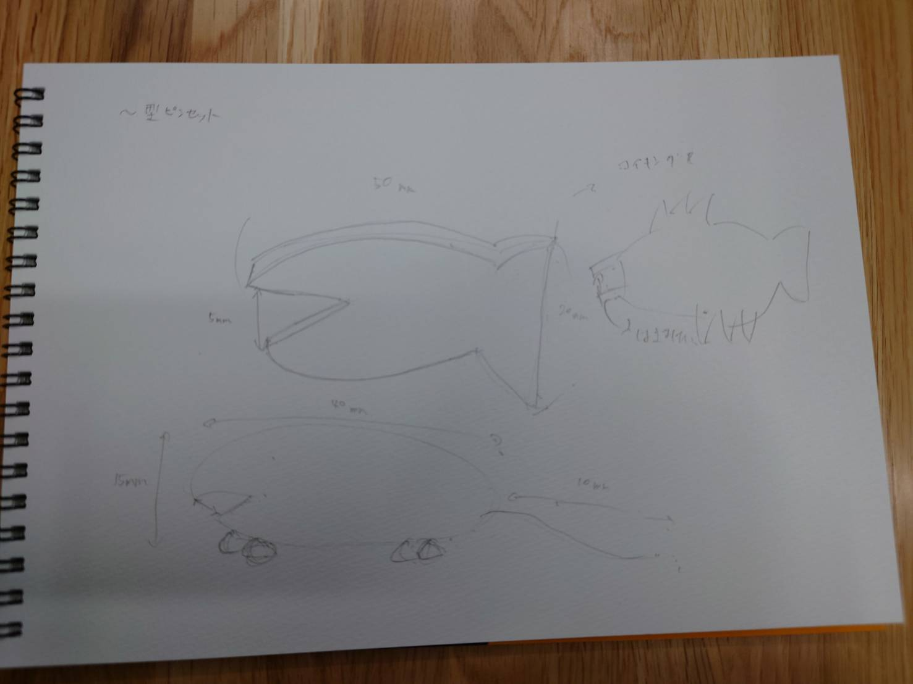
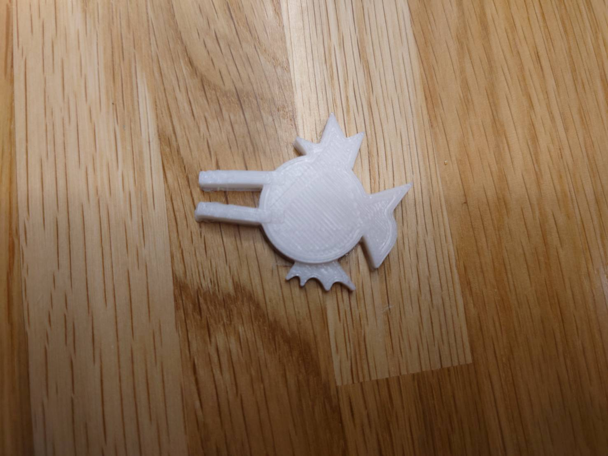

進化したピンセット
まずは構想のためにストーリーボードを作成する。
私は、ここで作成したピンセットとは異なるものを作成することになったが,
ストーリーボードを作成することは大切である。
ストーリーボードを作成することによってアイデアを生み出すことが出来るのである。

最初は普通の魚の形にしようとしました。
魚と考えたときにコイキングを思いつきました。
なので私はコイキングを作ろうと思いました。
これが私が実際に作ったピンセットの画像です。

そしてこれがstmlファイルです。
stmlファイル
これを3Dプリンターに出力することで作成することが出来ます。
この作品の説明
これはコイキングの口の部分をピンセットにして少し変わったピンセットにしました。
この作品を作ろうと思ったわけ
進化したピンセットを考えたとき面白い形で何かないかなと思った時に魚の形でコイキングを思いついたからです。
製作プロセスにおいて調べたこと
何もないところからコイキングを作るのは難しいと考えたため
ネットの画像をfusionに入れて上からなぞるといった形で作りました。